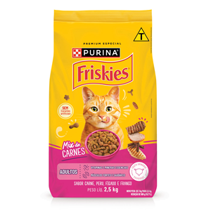

Ração para Gato

Detalhes do Produto
- Produto: Ração Premium para Gatos Adultos
- Marca: Purina
- Peso: 2,5 kg
- Indicação: Gatos adultos
- Sabor: Carne
- Tipo: Alimento seco
- Idade recomendada: Acima de 1 ano
- Embalagem: Pacote de 2,5 kg
- Preço: R$ 51,90
Alimento completo desenvolvido para auxiliar na alimentação diária de gatos adultos.